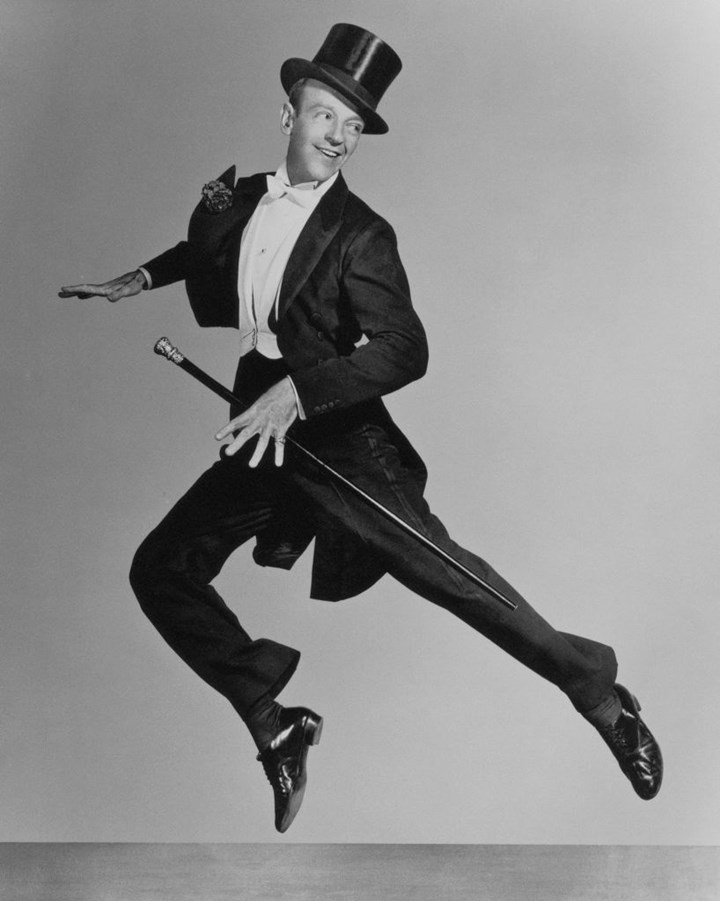
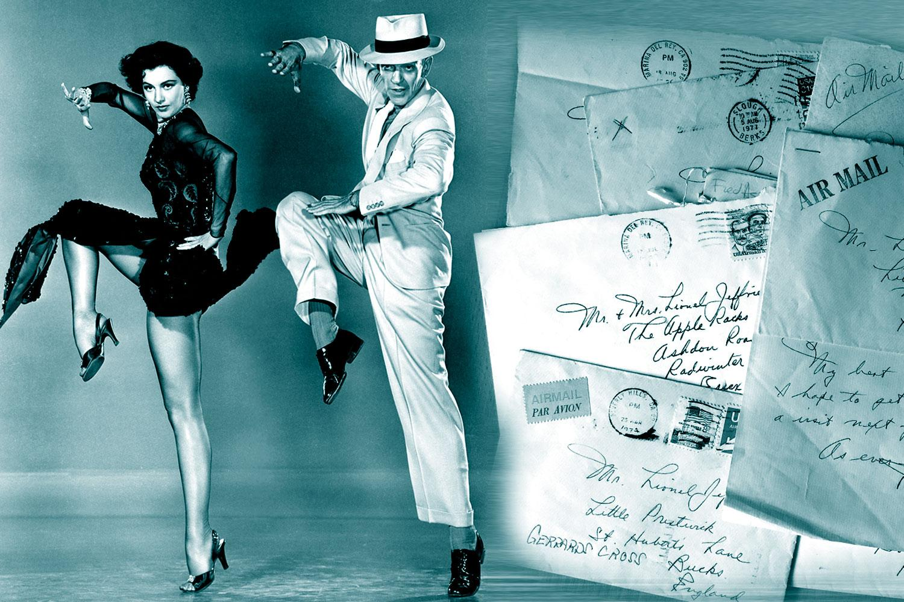
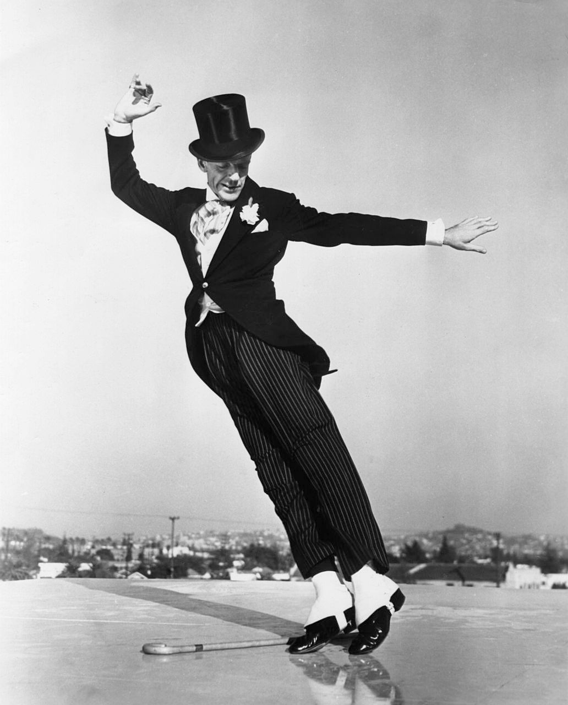

As he is considered one of the greatest ballroom and tap dancers in film history, Fred Astaire’s name is practically synonymous with dance. With his staring in 30+ film musicals and staring in over 10 stage musicals. Fred Astaire's name is one of the greatest in ballroom and tap dancing.
The website used to find the information about Fred Astaire's musical history was found at this website: Click Here

Astaire started performing as a child, he partnered up with his older sister, Adele. The two toured the vaudeville circuit before making it to Broadway in 1917. For all of his early success, a career in the movies eluded Astaire. He managed to do a screen test, but failed to attract any attention or interest. One studio he tried out for wrote at the time, "Can't sing. Can't act. Slightly balding. Can dance a little." From the article here.
Astaire landed a small role in 1933's Dancing Lady. The role opened the door to new opportunities. From his first contract with RKO Radio Pictures, to many more films.

Astaire was hospitalized for pnemonia. He died on June 22, 1987, in Los Angeles, California. With his passing Hollywood had lost one of its greatest talents. Former actor and president Ronald Reagan, upon learning the news, called Astaire "an American Legend" and "The ultimate dancer." Rogers said Astaire "was the best partner anyone could ever have."
